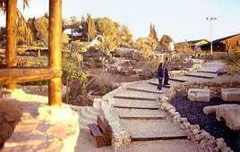

Ce dossier pratique et très utile a été réalisé en mars 2008 par Antoinette Brémond, une protestante, amie du peuple juif, qui vit en Israël depuis 1986. Il est reproduit partiellement ou en totalité sur différents sites et blogues. J’ai estimé utile de le reprendre dans la rubrique de ma section sur Academia.edu. Ma seule contribution personnelle a consisté à corriger quelques menues coquilles, à ajouter des liens utiles aux termes qui risquaient de n’être pas familiers aux lecteurs. Je regrette de n’avoir pas été en mesure d’entrer en contact avec l’auteure. Qu’elle trouve ici l’expression de mon appréciation et de ma reconnaissance pour cet excellent travail. Menahem R. Macina
Un sujet brûlant pour tous. Et pourtant, puisqu’ils existent, il faut en parler. Des Juifs qui croient que Jésus est le Messie d’Israël, et qui, tout en continuant à se dire juifs et tout en partageant la foi chrétienne, ne veulent pas « changer de religion ». Situation difficile car, pour les autorités rabbiniques, ils ne sont plus juifs, et pour les chrétiens des Églises traditionnelles... sont-ils vraiment chrétiens? Et pourquoi ne sont-ils pas tout simplement catholiques, protestants ou orthodoxes? Parfois ce qui semble « tout simple » devient problématique! S’il n’y avait pas eu des Juifs pour reconnaître, dans le Juif Jésus, le Messie d’Israël, il n’y aurait jamais eu de chrétiens, de pagano-chrétiens. Il a fallu ces Juifs vivant il y a 2000 ans en Galilée pour dire:
Celui de qui il est écrit dans la loi de Moïse et dans les Prophètes, nous l’avons trouvé. C’est Jésus fils de Joseph, de Nazareth. (Jean 1.45).
Quoi d’étonnant à ce que quelques Juifs d’aujourd’hui, et qui plus est en Israël, le découvrent, le reconnaissent comme Messie d’Israël et désirent en parler autour d’eux? Avant, on parlait de judéo-chrétiens, maintenant ils s’appellent Juifs messianiques.
Si, durant le premier siècle de notre ère, les judéo-chrétiens, appelés nazaréens puis chrétiens, faisaient partie de cette multiplicité de facettes du judaïsme de l’époque, très vite, ils furent exclus des synagogues. En effet après la destruction du Temple, en 70, les pharisiens éliminèrent toutes les « sectes » juives. Pendant les siècles qui suivirent, les Juifs qui embrassent la foi chrétienne s’intègrent à l’Église des nations, perdant ainsi leur identité juive, aussi bien pour la synagogue que pour l’Église. « Tu n’es plus juif, tu es chrétien, tu as changé de religion ». Cette réalité est toujours actuelle dans le peuple juif: « Un Juif qui se convertit à une autre religion rompt, ipso facto, son appartenance à notre peuple », disait, le 20 octobre 1998, le Grand Rabbin Samuel Sirat.
Pour l’Église il en était de même. Elle désirait établir une distinction nette entre Israël et l’Église. Par exemple, au Synode de Nicée II (730), il fut décidé que toute expression de la foi juive serait bannie de l’Église: la circoncision, le shabbat, les fêtes juives. Il y a encore une cinquantaine d’années, un Juif, pour être baptisé, devait abjurer son judaïsme.
C’est alors qu’en Angleterre, des chrétiens d’origine juive, pour se différencier des chrétiens des nations, fondent, en 1813, les Benei Abraham, une association de Juifs chrétiens. Puis, en 1865, l’Union chrétienne hébraïque voit le jour, formée de Juifs qui, de par leur origine et leur foi en Jésus, Messie d’Israël, se considèrent comme les successeurs des premiers disciples. En 1866, ces deux associations se groupent et forment l’Alliance chrétienne hébraïque. Après la Grande-Bretagne, c’est aux États- Unis que se crée, en 1915, l’Alliance chrétienne hébraïque américaine, avec cette même visée de grouper les chrétiens d’origine juive et d’annoncer le Messie aux Juifs. En 1930, ces deux alliances se fédèrent en une Alliance chrétienne hébraïque internationale. Ses membres se distinguent des chrétiens par leur pratique proche du judaïsme. En 1939, ils sont environ 100 000, groupés dans des assemblées autonomes nombreuses, surtout aux États-Unis. Ces Juifs hébraïques vont peu à peu se faire appeler Juifs messianiques. Ce terme marque à la fois la spécificité des croyants issus du judaïsme et leur désir de souligner la continuité sans rupture avec leur origine. Ils ne se considèrent pas comme des Juifs convertis, mais comme des Juifs accomplis ou des Juifs croyants. En 1965, cette alliance deviendra l’Alliance Internationale des Juifs Messianiques (IJMA). Très attentifs aux prophéties et à leur réalisation dans l’histoire contemporaine, ces Juifs messianiques voient, dans la création de l’État d’Israël en 1948, le retour des exilés, la victoire israélienne de 1967 et la réunification de Jérusalem comme un « signe des temps » (Lc 21, 24) annonçant la seconde venue du Messie. Le groupe le plus connu, quoique minoritaire et très controversé, les « Juifs pour Jésus », agit dans deux directions: aider les chrétiens à retrouver l’origine de leur foi et annoncer aux Juifs le Messie. En France, l’Alliance messianique française compte quelques centaines de membres.
En 1948, arrivait en Israël un ancien médecin colonial, juif de naissance, Zeev Koffsmann. Pendant son mandat en Côte d’Ivoire, au contact de l’église pentecôtiste, il avait, avec sa femme, reconnu Jésus comme le Messie d’Israël, tout en se considérant toujours comme Juif à part entière. Révoqué de son poste par les autorités de Vichy, pendant la Deuxième Guerre mondiale, il se sent poussé à venir en Israël et à y fonder une assemblée messianique:
L’assemblée messianique a quitté Jérusalem en 70 avec le peuple juif au moment de l’exil et y est revenue avec le peuple en 1948, disait-il.
C’est à lui qu’on doit le mot messianique pour caractériser les Juifs croyant en Jésus. En 1950 il fonde l’Assemblée messianique d’Israël, qui deviendra l’Assemblée messianique de Jérusalem, désirant ainsi faire revivre l’Église primitive en rendant à la foi chrétienne sa véritable origine et son style de vie juif. Zeev pensait que les Juifs messianiques seraient, dans l’avenir, un pont entre le judaïsme et le christianisme. Jésus-Christ y est nommé selon son nom hébreu: Yeshoua‘ Hamashiah. D’autres assemblées naissent dans le pays, formées au départ par des immigrants d’Europe, en particulier. En 1973, on compte sept assemblées en Israël, avec environ 1000 membres, Juifs et non-Juifs. En 1986, ils sont 3000; mais c’est surtout dans les années 1990 que ce mouvement grandit, grâce à l’arrivée des immigrants de l’ancienne URSS. En 1999, environ 5 000 messianiques se regroupent dans 69 assemblées et 12 groupes de maison. A Jérusalem, en 1986, il n’y avait que l’assemblée messianique fondée par Koffsmann, rue des Prophètes. En 2008, il y en a une vingtaine, sans compter les groupes de maison. Combien en Israël? C’est difficile à dire, tant ces assemblées sont fluctuantes, se divisant ou se joignant entre elles. On parle actuellement de 6 000 à 10 000 messianiques dans le pays.
Les assemblées comptent entre 20 et 250 membres. Chacune est indépendante, a son propre profil, son histoire, sa vision, ses pasteurs et sa théologie. Pourtant, tout en étant très variées, elles ont des traits communs aussi bien dans leurs théologies, leur prière, que dans leurs pratiques. Toutes mettent l’accent sur la seconde venue du Messie. Et, en cela, dans cette attente fervente de la rédemption, elles sont proches de certains courants du judaïsme. Toutes (ou presque) ont adopté le calendrier juif, se réunissant le shabbat, parfois le vendredi soir à l’entrée du shabbat. Toutes célèbrent les fêtes de pèlerinage, Pessah, Shavouot et Souccot, fêtes où le Dieu d’Israël intervient dans l’histoire de son peuple. Pour eux, Jésus est venu accomplir ces fêtes: c’est à Pessah, fête de la sortie d’Égypte, que Jésus est mort et ressuscité; c’est à Shavouot, fête du don de la Tora, que le Saint Esprit est descendu sur les apôtres; et, pour certains, Souccot est l’époque de la naissance de Jésus. Certaines fêtes chrétiennes ont donc changé de date et d’autres ne sont pas célébrées. Ont également leur place les autres fêtes du calendrier: Pourim, Hanouca, la fête de l’Indépendance, etc. Toutes ces assemblées se sentent très concernées par la situation politique du pays, suppliant Dieu pour que sa volonté soit faite. Les prophéties, interprétées de façon littérale, donnent le ton à leur intercession pour le pays. Les garçons sont circoncis et une cérémonie particulière est organisée lors de leur Bar Mitzva, soit au Mur, soit dans le lieu de culte. [On veut] que chaque enfant se sente Juif et Israélien à part entière. La plupart des assemblées se déroulent en hébreu, avec, très souvent, des traductions simultanées en russe, anglais, parfois allemand et français. Il faut dire que, dans la majorité de ces assemblées, les nouveaux immigrants ne possèdent pas suffisamment l’hébreu et qu’il y a souvent des visiteurs étrangers. Pour tous, l’Écriture Sainte comprend le Tanakh (Ancien Testament) et le Nouveau Testament, la Bible étant pour eux tout entière juive et Parole de Dieu. Ils célèbrent la Sainte Cène en général une fois par mois. Le baptême est proposé aux adultes ayant adhéré au Messie. Il se pratique par immersion, comme dans l’Église primitive. On ne trouve jamais de croix dans leurs lieux de culte, par contre une menora, l’étoile de David, parfois un schofar, des bannières avec des versets bibliques en hébreu… ou même le drapeau d’Israël. Le déroulement du culte est sensiblement le même: une heure de louange, souvent la lecture d’une partie du texte de la synagogue, le sermon d’une heure, prière et témoignages. Le Shema, la bénédiction des Cohanim, mais aussi le Notre Père, y ont leur place. Les femmes ne prêchent pas. Il y a également un service pour les enfants. Tous les messianiques mettent l’accent sur l’importance du témoignage: « Nous l’avons trouvé ».
Certaines assemblées voulant s’identifier davantage au judaïsme ont, dans leur lieu de culte, le rouleau de la Tora et suivent partiellement la liturgie de la synagogue. Certains fidèles portent la kippa et le châle de prière. Mais leur lieu de culte ne s’appelle pas « synagogue » ni leurs pasteurs « rabbins » comme aux États-Unis. Les membres de ces assemblées pratiquent certaines lois juives: la kashrout, le respect du shabbat, etc. Les assemblées charismatiques donnant beaucoup d’importance aux dons de l’Esprit selon les Actes des Apôtres se regroupent parfois pour des temps de louange ou d’intercession. D’autres sont opposées à ce mouvement. Cette friction entre les charismatiques et les non-charismatiques fait penser au différend entre les Hassidim et les « Mitnagdim » (opposants), [dans le judaïsme]. Des assemblées messianiques russes ont été créées dans les années 90 par des Juifs de Russie, déjà évangéliques ou pentecôtistes dans leur pays d’origine. Ces assemblées conservent souvent leur style évangélique. La moitié de leurs membres actuels étaient déjà chrétiens avant de venir en Israël. Mais on trouve également beaucoup de Juifs de Russie dans les assemblées hébraïques. Les assemblées éthiopiennes. De même, parmi les nouveaux immigrants d’Éthiopie, plusieurs étaient attachés à des églises évangéliques en Éthiopie. Ils créent donc des congrégations leur permettant de continuer à prier en amharique. Les jeunes préfèrent se joindre à des assemblées hébraïques.
Quelques assemblées prient en anglais.
Les cultes ont lieu dans des appartements ou des salles privées, généralement en location, rarement dans une église. Citons, par exemple, l’assemblée de « l’Agneau sur le mont Sion », qui tient ses réunions dans l’Église anglicane Christ Church à Jérusalem. Certaines assemblées ont acheté ou construit. Signalons « le Pavillon », grande salle de 700 places, achetée par l’assemblée King of king au centre-ville de Jérusalem, au rez-de-chaussée d’un bâtiment de 14 étages. La même communauté possède également le quatorzième étage, lieu de prière où se succèdent les intercesseurs d’Israël et de toutes les nations.
Avec la deuxième et la troisième génération de messianiques, ce mouvement devient de plus en plus israélien. On parle hébreu sans accent étranger, et ces jeunes adultes s’impliquent dans la société. On les retrouve à l’armée, à l’université, et dans tous les secteurs professionnels, même s’ils restent une infime minorité. Certains participent à des associations israéliennes d’aide humanitaire. Pour lutter contre l’avortement, ils ont lancé l’association « Pro Life » et se mobilisent pour aider les femmes en difficulté. Ces jeunes parlent très simplement et librement de leur foi.
Les premiers pasteurs de ces assemblées étaient, pour la plupart, des nouveaux immigrants d’Amérique, de Russie, de France, ou d’Éthiopie. Beaucoup avaient reçu une formation biblique dans l’une ou l’autre école évangélique de leur pays. Dans les années 80, quelques écoles bibliques sont créées en Israël. Citons:
Beit Emmanuel Study, à Jaffa jusqu’en 1989. Le centre Caspari de Jérusalem, avec son programme Telem qui donne un cours mensuel sur un an en hébreu pour préparer au ministère pastoral. Les élèves arabes chrétiens sont les bienvenus. La « Messianic Midrashah », créée en 1993 par un pasteur israélien, qui dispense un enseignement biblique, archéologique, de littérature rabbinique et de théologie pratique. I.C.B, (Israel College of the Bible), la seule institution académique messianique, avec ses trois implantations: Jérusalem, Tel-Aviv et Haïfa. Elle donne ses cours en hébreu, anglais et amharique. Plusieurs assemblées organisent régulièrement des cours de formation pour leurs membres. Il est certain que la formation théologique et pratique des cadres messianiques israéliens n’en est qu’à ses débuts.
Quelques nouveaux pasteurs, ayant étudié la pensée rabbinique et la lecture juive des Écritures désirent ouvrir leur assemblée à cette approche juive de la Parole. Tout bouge dans ce mouvement.
Chaque assemblée messianique est autonome et a son caractère propre. Pourtant, malgré cette diversité, on peut tout de même parler du « mouvement messianique d’Israël ». Dans certaines villes, Jérusalem, Haïfa, Tel Aviv en particulier, des assemblées se retrouvent régulièrement plusieurs fois par an, à l’occasion d’une fête, pour louer ensemble, ou lors d’une crise politique, pour intercéder. D’autre part, des messianiques de diverses congrégations s’engagent ensemble dans les actions sociales, pour la musique, ou pour le témoignage. Depuis 1981, les pasteurs messianiques ont senti le besoin de se rencontrer. Une Conférence Nationale des pasteurs et anciens a lieu trois fois par an. Malgré quelques essais, aucune déclaration commune n’a pu être élaborée et aucune autorité centrale ne représente ce mouvement à l’échelon national. Des retraites spirituelles régionales et nationales, organisées régulièrement, semblent le mieux répondre aux besoins des leaders. Dès 2003, que cela soit en Galilée, ou à Jérusalem, les pasteurs arabes évangéliques y sont également conviés. De même, les cadres des assemblées russes et amhariques, restés pendant quelques années à l’écart à cause de la langue, se joignent actuellement aux retraites des pasteurs de langue hébraïque. Depuis 2001, une retraite bisannuelle de 3 à 4 jours, dans le Néguev, organisée au niveau national, rassemble 50 à 70 participants. Ils sont là pour écouter ensemble le Seigneur. En 1997, les dirigeants messianiques israéliens créent leur propre réseau informatique permettant des relations et informations intercommunautaires rapides. La musique
La louange ayant une place primordiale dans les assemblées, il a fallu composer, ou traduire des cantiques. En 1957, fut publié un livre de chants - « Chir hadash » (un chant nouveau) - comprenant 200 chants et hymnes, dont la majorité comprenait des cantiques évangéliques, souvent très beaux, traduits en hébreu. En 1976 est publié un autre livre contenant 400 chants, dont des Negro spirituals, des chants du renouveau charismatique et des assemblées messianiques d’Amérique. Tous traduits, bien sûr, en hébreu. Mais, très vite, sont apparus des chants composés en hébreu, plus populaires et simples: quelques versets bibliques répétés. C’était plus facile à chanter pour les nouveaux immigrants. La guitare fit son entrée. Dès 1979, les compositeurs messianiques israéliens organisent un congrès de musiciens messianiques, leur permettant de se faire entendre. Les meilleurs chants sont retenus et édités en livrets. En 1997, est publié un livre de chants messianiques, dont la plupart des paroles sont tirées de la Bible. Certains chants reprennent des prières juives du Siddour (livre de prières). Actuellement des jeunes compositeurs préfèrent souvent écrire des paroles de leur cru, exprimant leur foi, leur joie, leur amour pour Yeshoua [Jésus]. La musique, très rythmée, reste cependant souvent pauvre. « Allons-nous un jour, nous les Israéliens, écrire des hymnes, des symphonies, des oratorios, des œuvres qui tiennent la rampe? », se demande David Loden, un des premiers musiciens messianiques d’Israël. Depuis trois ans, accompagnée de batteries, de guitares électriques, et d’un piano, une chorale messianique composée de jeunes et de quelques anciens, tous Israéliens, se produit à Jérusalem. La salle est comble, et l’enthousiasme très israélien encourage ces jeunes artistes.
L’opposition Du point de vue juridique, les assemblées messianiques sont des associations déclarées (amoutot[1]). En général, leur présence est acceptée. Pourtant, l’opposition existe. Les messianiques sont accusés par certaines autorités juives d’être missionnaires. Dans un document ratifié par les leaders des quatre dénominations juives (conservateurs, orthodoxes, libéraux et réformés), il leur est reproché d’être « en conflit radical avec les intérêts communautaires et la destinée du peuple juif », et d’afficher un « judaïsme qui n’en n’est pas un », ce qui leur permet « d’essayer de convertir leurs anciens coreligionnaires ». En 1977, une loi a été votée pour freiner ce mouvement. Interdiction d’évangéliser des mineurs et de proposer une aide matérielle en vue d’inciter à la conversion. Le reste est légal. En 1997 et 1998, deux nouvelles lois anti-missionnaires plus incisives sont présentées à la Knesset. Elles n’ont pas de suite. Il faut dire que beaucoup de ce que l’on raconte et répète sur ces ‘missionnaires’, et qui relève souvent plus du mythe et du préjugé, s’avère aujourd’hui sans fondement, sauf pour quelques rares exceptions. L’organisation Yad Leahim (la main tendue aux frères) qui reçoit des subsides gouvernementaux pour son activé caritative, a un département anti-missionnaire très organisé et efficace. Découvrir les messianiques, les menacer et attirer parfois contre eux la haine des voisins, des patrons, des propriétaires et même des directeurs d’école. Dans certains cas extrêmes, les enfants « dépistés » doivent quitter l’établissement scolaire où les parents les avaient inscrits, et des adultes perdent leur travail, simplement à cause de leur foi. Depuis la naissance du mouvement messianique, des pasteurs, en particulier, ont été menacés et du matériel a été abîmé. Des graffitis ou posters, avec la photo du « messianique » du quartier, sont affichés: « Danger ». Certaines salles de culte ont été incendiées. Mais cela reste exceptionnel. Citons, en particulier, la communauté d’Arad, harcelée par le groupe orthodoxe des Hassidim de Gour, ces dernières années, et ses membres insultés publiquement. Cette « haine profonde » qui apparaît dans certaines couches de la population, n’a, en fait, rien d’étonnant, tant la peur de se voir « ravir » des frères est latente. Peut- on penser que cette peur s’enracine dans une longue histoire de persécution et de conversions forcées? Un messianique, très discret, ayant été obligé de déménager avec sa famille, me disait: « Pourtant, je n’ai rien fait de mal. Je n’ai rien à cacher. J’ai simplement rencontré le Messie d’Israël ». On pense à ce que Jésus disait à ses disciples: « Vous serez haïs de tous à cause de mon nom » (Lc 21, 17). Quelques exemples récents:
En avril, le tribunal local de Jérusalem avait accordé à une association messianique le droit de restaurer l’intérieur d’une maison qui lui appartenait depuis 20 ans et lui servait de lieu de réunion et d’activités caritatives, en collaboration avec certains habitants du quartier. Mais le Conseil du quartier Rehavia, de Jérusalem, mobilisé par une association anti-messianique et soutenu par le Parti national religieux, prit peur. Craignant l’influence que pourrait avoir ces messianiques sur le voisinage, sur les enfants en particulier, il a fait signer une pétition adressée à la Cour suprême pour arrêter les travaux en cours. L’atmosphère anti-messianique a culminé dans un attentat terroriste à Ariel, le 20 mars, contre un pasteur et sa famille, lequel a failli coûter la vie au plus jeune fils de 16 ans, qui a été grièvement atteint. L’enquête n’avance pas, malgré la caméra installée devant la maison à cause des menaces. Étouffer cette affaire serait très grave, en ce que cela ouvrirait la voie à d’autres attentats. Quelques rabbins ont essayé de boycotter le concours international de la Bible qui a lieu, comme chaque année, le jour de l’Indépendance. En effet, Yad Leahim avait découvert qu’une candidate, sur les quatre sélectionnés par un concours préliminaire, était une juive messianique de 17 ans. Pour ces rabbins, soutenus par les deux grands rabbins d’Israël, elle n’est donc plus juive et ne peut représenter Israël à ce concours. Mais du point de vue juridique, a déclaré le ministère de l’Éducation, elle est juive. Le concours a donc eu lieu avec tous les candidats sélectionnés. Une jeune Israélienne de 15 ans a gagné le concours. Pourtant, si, en 1986, ma maîtresse d’oulpan disait: « les Juifs messianiques, cela ne doit pas exister », le climat actuel est différent. La population laïque, en particulier, est plus ouverte à la diversité de croyances. Dans la presse et la télévision, on parle parfois favorablement de ces messianiques, comme de loyaux citoyens.
Un jeune avocat messianique a créé et dirige cet Institut dont le nom suffit à définir son but. Se référant à la Cour suprême d’Israël, cet Institut veut permettre, entre autres, à tout Juif de trouver sa place en Israël, et cela quelle que soit sa foi. Depuis deux ans et demi, douze Juifs messianiques, auxquels le ministère de l’Intérieur refusait le droit de citoyenneté selon la Loi du Retour, avaient demandé l’aide juridique au bureau d’avocats en lien avec J.I.J. En avril 2008, cet Institut eut gain de cause: une décision fut promulguée par la Cour suprême, stipulant que, selon la loi, « être juif messianique n’empêche personne d’être citoyen d’Israël selon la Loi du Retour ». Une décision très attendue. Le J.I.J lutte pour permettre à la communauté juive messianique d’être reconnue comme étant simplement l’un des divers mouvements du monde juif. Cet Institut mène aussi d’autres combats, contre la pauvreté par exemple.
En 1974, Seppo Raulu, un Finlandais, reçoit de Golda Meir le droit d’installer un moshav sur l’une de collines jouxtant Abou Gosh. Il vient, avec quelques concitoyens, bâtir un mémorial pour honorer la mémoire de 8 Juifs autrichiens réfugiés en Finlande et expulsés vers Auschwitz. C’est Yad Hashmona (mémorial des huit). Ces Finlandais protestants, venus pour aider Israël, y créent une entreprise de menuiserie. Les meubles et infrastructures communes affichent un pur style scandinave. En 1989, trois Juifs messianiques israéliens se joignent à ces Finlandais. Peu à peu, des Juifs messianiques remplacent les pionniers finlandais. En 2008, sur les 15 membres fondateurs, seules quatre Finlandaises sont encore là. Ce village messianique se compose actuellement de 15 familles et de 8 célibataires: 38 membres et une quarantaine d’enfants. Tous ont la nationalité israélienne, acquise parfois par le mariage. Une vingtaine de volontaires internationaux partagent leur vie et leur travail. Ces dernières années, ce moshav s’est transformé en un centre touristique, avec maisons d’hôtes, salles de conférences et restaurant strictement cacher, permettant des cérémonies religieuses, mariages, bar-mitzva, anniversaires, etc. toutes tendances confondues. En 2000, le moshav inaugure son « village biblique » permettant de découvrir les conditions de vie et de travail de l’époque biblique. Une foule d’Israéliens viennent le visiter et y prennent souvent un repas. Certains redoutent l’influence de ces messianiques. Mais, pour Yad Hashmona, la visite de ce musée biblique n’a rien à voir avec une velléité missionnaire. Le moshav dit aspirer à une cohabitation harmonieuse et vouloir trouver sa place dans la société israélienne. Sur ce point, son intégration semble parfaitement réussie. Comme beaucoup de villages communautaires, Yad Hashmona est actuellement en cours de privatisation. Cet été, les 38 membres toucheront la totalité de leur salaire.

Conclusion Ce mouvement est-il devenu un pont entre les Juifs et les chrétiens, comme le désiraient ses précurseurs? Il est temps que nous, les chrétiens, soyons attentifs à cette réalité nouvelle – mais, à la réflexion, plutôt ancienne - de l’existence de Juifs ayant rencontré le Ressuscité, Jésus Messie d’Israël, sans perdre, pour autant, leur judéité. Et qu’ils puissent compter sur notre solidarité et notre prière.
Texte mis en ligne sur le site Academia.edu, le 24 novembre 2016
[1] Pluriel de amutah, association sans but lucratif (type Loi 1901 en France). Note de Menahem Macina.